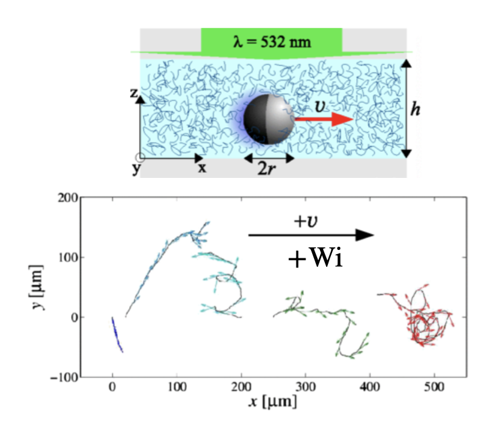
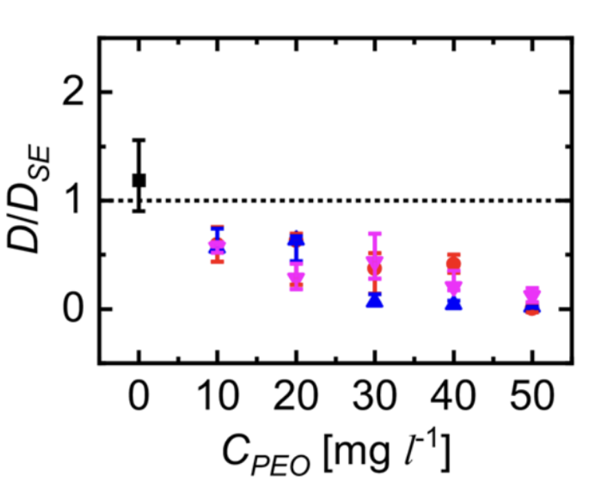

How Does a Janus Particle Propel Itself?

What happens when these particles move in complex fluids?
Self-diffusiophoresis: asymmetric activity → solute gradient → surface slip → propulsion
Complex Fluids Change Particle Dynamics

Enhanced rotational fluctuations
Gomez-Solano et al., PRL, 2016

Reduced propulsion
Saad & Natale, Soft Matter, 2019

Suppressed active motion
Raman et al., ACS Phys. Chem. Au, 2023
Experiments reveal diverse responses, but the direct rheological effect on propulsion remains unclear.
From Spheres to Spheroids
Sphere — correction vanishes at half-coating
?

Spheroid — geometric anisotropy
We vary two control parameters: eccentricity \(e\) (shape) and coverage \(\zeta_0\) (activity).
Model: A Spheroidal Self-Diffusiophoretic Particle

- Solve the concentration and flow fields in prolate spheroidal coordinates \((\tau,\zeta)\)
- Shape parameter: eccentricity \(e=\sqrt{a^2-b^2}/a\)
- Activity parameter: catalytic coverage \(\zeta_0\)
Concentration Gradients Drive Surface Slip

Surface flux \(\to\) Concentration field
\[ \frac{\partial C}{\partial t} + \boldsymbol{u}\cdot\nabla C = D\nabla^2 C, \quad \left. D\boldsymbol{n}\cdot\nabla C \right|_{\tau=\tau_0,\zeta<\zeta_0} = -A \]
\(C\): solute concentration; \(\boldsymbol{u}\): fluid velocity; \(D\): solute diffusivity; \(A\): surface activity / fixed solute flux on the active cap; \(\boldsymbol{n}\): unit normal.
Tangential gradient \(\to\) Phoretic slip
\[ \boldsymbol{u}_s = M(\boldsymbol{I}-\boldsymbol{n}\boldsymbol{n})\cdot \nabla C \]
\(M\): phoretic mobility; \((\boldsymbol{I}-\boldsymbol{n}\boldsymbol{n})\): tangential projection operator.
Slip velocity \(\to\) Force-free propulsion
\[ \boldsymbol{u}(\tau=\tau_0) = \boldsymbol{u}_s(\zeta)+\boldsymbol{U}, \]
\[ \int_S \boldsymbol{n}\cdot\boldsymbol{\sigma}\,\mathrm{d}S = \boldsymbol{0} \]

biological propulsion analogy
Diffusion-Dominated Solute Transport
Diffusion-dominated limit: \(Pe=\dfrac{MAa}{D^2}\) — advection / diffusion
\[ Pe\ll1 \;\Rightarrow\; \nabla^2 c=0, \qquad \left.\boldsymbol{n}\cdot\nabla c\right|_{\tau=\tau_0} = \begin{cases} -1, & \zeta\le \zeta_0 \quad \text{active},\\ 0, & \zeta>\zeta_0 \quad \text{inert}, \end{cases} \qquad c|_{\tau\to\infty}=0 \]
\(c\): dimensionless relative solute concentration; \(\tau=\tau_0\): particle surface.
Series solution and induced slip
\[ c(\tau,\zeta) = \sum_{n=0}^{\infty} \rho_n Q_n(\tau)P_n(\zeta) \]
\[ \implies u_s(\zeta) = \tau_0\sum_{n=1}^{\infty} B_n\frac{P_n^1(\zeta)}{\sqrt{\tau_0^2-\zeta^2}} \]
\(P_n,Q_n\): Legendre functions; \(\rho_n\): coefficients set by the flux boundary condition; \(B_n=-\rho_n Q_n(\tau_0)\).
Note: finite-\(\mathrm{Pe}\) coupling
Finite \(Pe\): advection couples the solute and flow fields, allowing rheology to modify the concentration field and hence the phoretic slip.

Why the Cancellation Breaks
- The first-order speed is set by a local kernel: \(U_1 \propto \int_V\) 𝒦 \(\mathrm{d}V\), where 𝒦 \(= \boldsymbol{A}:\nabla\hat{\boldsymbol{u}}\) (blue enhances, red reduces)

Sphere — 𝒦 antisymmetric, cancels exactly ⟹ \(U_1=0\)

Spheroid — curvature localizes 𝒦, antisymmetry broken ⟹ \(U_1\neq0\)
Summary
Geometry can qualitatively change non-Newtonian propulsion.
- Shear thinning: Elongation can turn propulsion reduction into enhancement and break the complementary-coating symmetry.
- Viscoelasticity: Elongation can produce strong propulsion enhancement and break the coverage antisymmetry.
Acknowledgements
Qiang Zhao (赵强)
Peking University
Guangpu Zhu (朱光普)
Nanjing University of Aeronautics and Astronautics
Prof. On Shun Pak
Santa Clara University